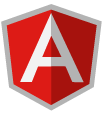
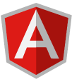

2015
Laurea magistrale in "Scienze Informatiche"
Inizio studi magistrali presso la facoltà di scienze MM.FF.NN Tor Vergata
Inizio studi magistrali presso la facoltà di scienze MM.FF.NN Tor Vergata
Conseguita presso la facoltà di scienze MM.FF.NN Tor Vergata Votazione finale: 100/110
Decoro Urbano è l’innovativo progetto di Maiora Labs che rende possibile un filo diretto tra cittadini ed amministrazioni pubbliche nell’ambito della riqualificazione urbana. L’applicazione smartphone permette di inviare al proprio Comune le foto-segnalazioni di degrado divise per categoria e visualizzate su mappa. Decoro Urbano è inoltre un social network per cittadini attivi che utilizzano l’app come strumento di partecipazione, contribuendo alla risoluzione dei problemi del territorio.
Rendo è una piattaforma web per la rendicontazione delle spese sostenute in forza dei finanziamenti messi a bando dalla pubblica amministrazione. Attraverso questo software, i soggetti beneficiari dei finanziamenti possono trasmettere i dati relativi all’utilizzo dei fondi ricevuti seguendo gli step di compilazione e allegando la documentazione richiesta, il tutto tramite web. Tecnologie utilizzate Angular2+, MaterializeCss, NgRx.
Una piattaforma web per monitorare e gestire i finanziamenti messi a bando per le scuole dal Ministero dell’istruzione. Attraverso questo software si informatizza l’intero processo, dalla realizzazione del bando alla rendicontazione del progetto se ne monitora l’andamento, si ottengono report e statistiche su partecipazione e risultati. Tecnologie utilizzate Angular2+, MaterializeCss, NgRx.
Inizio esperienza lavorativa come Enterprise Software Architect.
Attività di tutorato presso Università di Roma Tor Vergata. Sono stati trattati argomenti basilari per un programmatore affiancando ad una parte teorica anche una di pratica.
Realizzazione di una Botnet in cui l'interazione tra i botmaster ed i bot si ha solo nel caso in cui la richiesta di accesso alla botnet sia accompagnata da una "codifica particolare"
(es. user-agent=botnet nell'header http).
Nel caso in cui la botnet venga contattata canonicamente dovrebbe mostrare una home page fittizzia.
Attività di tutorato presso Università di Roma Tor Vergata. Sono stati trattati argomenti basilari per un programmatore affiancando ad una parte teorica anche una di pratica.
Realizzazione di una web application basata su una Blockchain da noi sviluppata con l'obiettivo di produrre una piattaforma dedicata alla tutela dei diritti d'autore siano essi di testo, multimediali, o di differente natura. Oltre al protocollo P2P sul quale si appoggia la blockchain, è stata sviluppata un'applicazione web che permette di visualizzare tutte le transazioni avvenute nella blockchain. L'applicazione è stata sviluppata utilizzando AngularJs ed AngularMaterial, inoltre è stato integrato D3.js in modo da visualizzare in tempo reale la catena sfruttando il plugin Collapsible Tree
Realizzazione di una web application utilizzando lo MEAN, in grado di analizzare in real time il traffico in entrata e uscita della macchina su cui installato. I dati sono serviti alla creazione di alberi rappresentati le strutture dei siti web visualizzati.
Sviluppo di un algoritmo in grado di rilevare un attacco di tipo SYN flood tramite l'utilizzo di tecnologia NodeJS.
Generazione del modello dei dati a partire dal modello BPMN annotato. L'obiettivo è stato riuscire a ricavare il modello dei dati generato da WebRatio, una piattaforma di sviluppo automatizzata. A tal proposito è stata studiata in maniera approfondita gran parte dell'infrastruttura e superstruttura UML, oltre all'acquisizione dei concetti base riguardo la BPMN, MDE ed MDA.
Il progetto ha riguardato la creazione di una base di dati in grado di gestire varie problematiche inerenti l'organizzazione di agenzie operanti nell'ambito delle Onoranze Funebri, a partire dalla gestione di un ordine effettuato da un cliente a quello del personale aziendale. La tecnologia utilizzata è stata Mysql.
Scopo del progetto è consentire agli utenti finali, la memorizzazione e visualizzazione di "Punti di Interesse" tramite l'utilizzo delle Google Maps API. E' stata realizzata una web application utilizzando Spring, Hibernate, Mysql per l'ambito server-side; per quanto riguarda l'ambito client-side, sono state tecnologie come HTML5, Jquery e Bootstrap. Inoltre, è stata realizzata un'applicazione Android in grado di interfacciarsi con l'ambiente server-side tramite SOAP; tale applicazione consentiva solo la visualizzazione delle informazioni su mappa ma non la loro modifica.
Realizzazione di una web application per la gestione di una videoteca. Sono state utilizzate tecnologie come Spring, Hibernate e Mysql per quanto riguarda l'ambiente server-side mentre per quanto riguarda l'ambiente client-side sono state utilizzate tecnologie come HTML5, JSP, Bootstrap.
Implementazione di algoritmi di intelligenza artificiale per la realizzazione del classico gioco "Tic Tac Toe"(Tris) tramite tecnologia Java.
Il progetto ha previsto la realizzazione di un gioco di simulazione chiamato "Foxit and rabbit". La creazione del progetto in esame ha permesso l'acquisizione di conoscenze fondamentali sulla tecnologia Java.
Il progetto è consistito nella creazione di un gioco nel quale un individuo avrebbe dovuto trovare l'uscita del labirinto generato dal sistema in modo randomico. Funzionalità sviluppate: intelligenza artificiale basilare, salvataggio sul file del labirinto generato, caricamento di un labirinto da file, gestione di eventuali errori. Sono quindi stati toccati vari concetti fondamentali del liguaggio C
 
